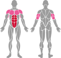
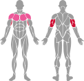
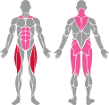

SVG Muscle Group Path Consolidation Test
✅ Changes Made
Before: Each muscle group contained multiple <path> elements with separate classes
After: Each muscle group now contains a single <path> element with compound path data
Benefit: Color changes for an entire muscle group now only require updating one class instead of multiple
Plank
Original: 94 paths → Modified: 21 paths (one per muscle group)
Dumbbell Bicep Curl

Biceps highlighted as primary muscle (cls-primary)
Chin Up

Dip
Barbell Squat (High Bar)
Crunch